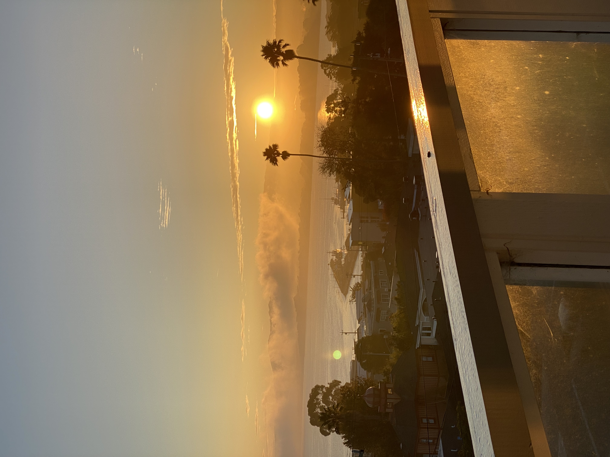

Precious Ignorance
Never mine to keep
How precious this ignorance, how sacred these demons, that steal back the tools that released me, the objects that bought my freedom. Precious things, reclaimed, never mine to keep. I had clung to my rung on this ladder, afraid to look down, to regress, relinquish what seemed like progress, but no. It was a chain I forged and bound myself to, my own will the cage. And so now my grip releases, and the whoosh of wind is loud, will I drown in this sound or is it oxygen, will I be born again or free at last?
